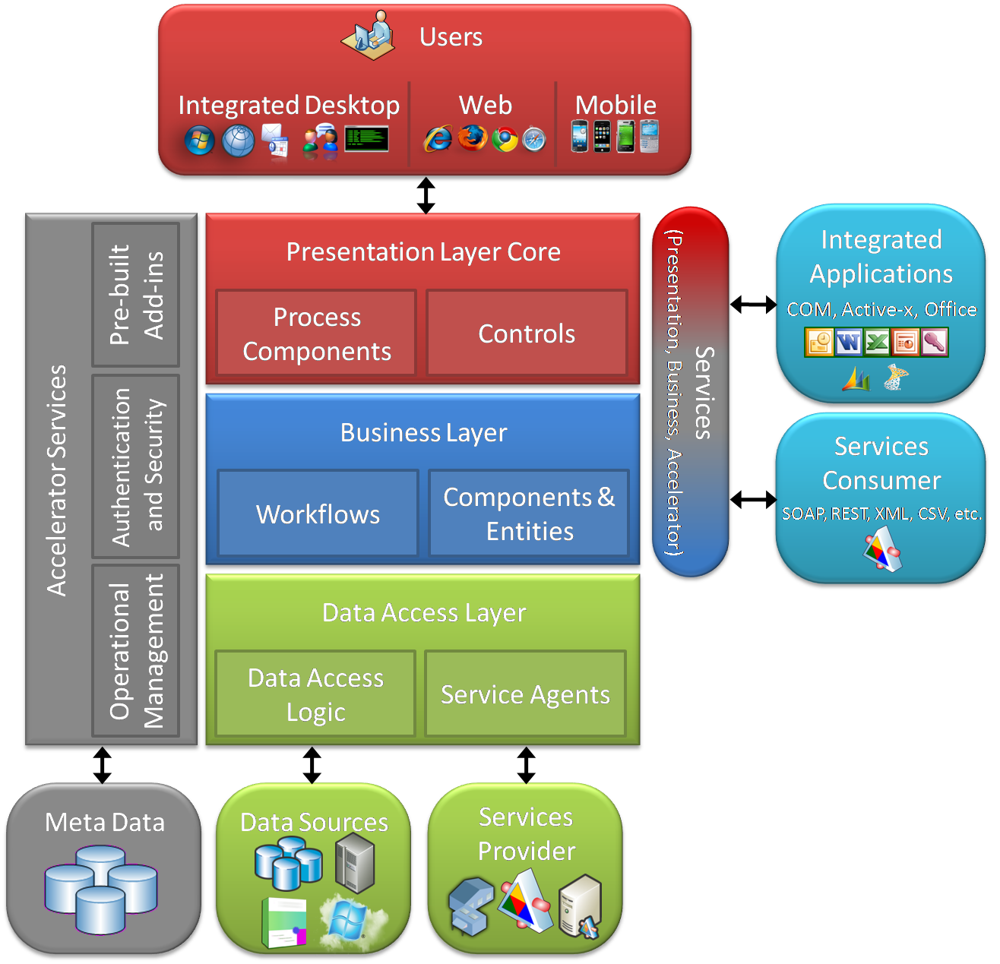

### About me
- Software engineer in [Linagora](https://linagora.com/)
- Team leader
- Web development (Javascript fullstack)
- Github: https://github.com/tuanlc
- Twitter: https://twitter.com/tlcong
Modular Architectures
- Separating the functionality of a program into independent modules
- Two styles:
- Layer
- Services

Source: http://bit.ly/2VkdbOq
Layer style

Services style
### Why?
- Understanding and Debugging source code
- Maintenance
- Teams work independently
- Plug on demand
### Modularity in OpenPaaS
### Awesome Modules
- OpenPaaS Modules
- Come on top of classic NPM modules
- With modules, you can:
- Add pages, or widgets, into the ESN web interface
- Add REST endpoints, that third party applications will be able to query
- Expose objects and services to other modules
- Modules loader: https://github.com/linagora/awesome-module-manager
Communicate among OpenPaaS modules
#### Core Registries
- Core defines registries for generic concepts
- Modules register their logics and configurations
- Modules can read other module configurations from core registries
* Achievement:
- Modules completly independent
- Apply for both backend and frontend
* Draw back: Only apply for generic concept but not for specific modules
#### Dynamic directives
- Create an anchor element where other modules can inject their parts to
* Achievement:
- Handle specific cases
* Draw back:
- Modules are not independent
- Only for frontend
#### Connected modules
Having a connected module among modules
* Achievement:
- Handle specific cases
- Apply for both backend and frontend
* Draw back:
- Modules depend on each other
- Create one more connected module to connect modules
#### Thanks for your attention!